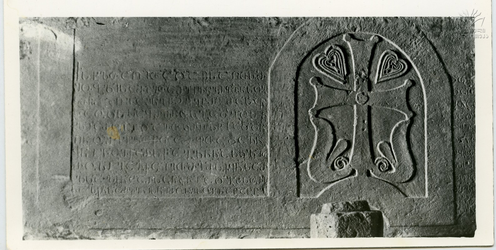

ზარზმის ივანე სულასძის წარწერა ეგუტერის აშენებისაInscription from Zarzma of Ivane son of Sula
ზარზმის ივანე სულასძის წარწერა ეგუტერის აშენებისა
Inscription from Zarzma of Ivane son of Sula
შინაარსი / Summary
საამშენებლო Building
ბიბლიოგრაფია Bibliography
კრიტიკული გამოცემა Interpretive Edition
† ს(ა)ხ(ე)ლ(ი)თა ღ(მრთ)ი(საჲ)თა და წ(მიდი)სა ღ(მრ)თ(ი)სმ -
შობ(ე)ლისა მ(ეო)ხ(ე)ბ(ი)თა მე ივ(ა)ნე ძემ(ა)ნ სო(ჳ)ლ(ა)სმ(ა)ნ აღვაშ(ე)ნე წ(მიდა)ჲ ეგ(უ)ტ(ე)რი მას ჟ(ა)მ -
5ლიაროსი დავ(ი)თ კ(უ)რ(ა)პ(ა)ლ(ა)ტი ად(ი)დ(ე)ნ
ღ(მერთმა)ნ ო(ჳ)შ(ო)ჳ(ე)ლა წ(მიდა)თა მ(ე)ფ(ე)თა და ჩ(უე)ნ
ყ(ოველ)ნი ლაშქარს წა(რ)გ(უავ)ლ(ი)ნნა სკლია -
როსი გავ(ა)ქციეთ მე მ(ა)ს ქ(უე)ყ(ა)ნ(ა)სა რ(ომე)ლსა ჰ(რ)ქ(ჳა)ნ ხარსანანი ადგილსა რ(ომე)ლ -
10სა ჰ(რ)ქ(ჳა)ნ სარვენისნი მო(ჳ)ნ ესუენა ტახტი
დიპლომატიური გამოცემა Diplomatic Edition
† ႱႾႪႧႠ ႶႨႧႠ ႣႠ ႼႱႠ ႶႧႱႫ
ႸႭႡႪႨႱႠ ႫႾႡႧႠ ႫႤ ႨႥႬႤ ႻႤႫႬ ႱႭႪႱႫႬ ႠႶႥႠႸႬႤ ႼჂ ႤႢႲႰႨ ႫႠႱ ႯႫ
ႱႠ ႭႣႱ ႱႠႡႰႻႬႧႱ ႢႠႣႢႠ ႱႩ
5ႪႨႠႰႭႱႨ ႣႠႥႧ ႩႰႮႪႲႨ ႠႣႣႬ
ႶႬ ႭႸჃႪႠ ႼႧႠ ႫႴႧႠ ႣႠ ႹႬ
ႷႬႨ ႪႠႸႵႠႰႱ ႼႠႢႪႬႬႠ ႱႩႪႨႠ
ႰႭႱႨ ႢႠႥႵႺႨႤႧ ႫႤ ႫႱ ႵႷႬႱႠ ႰႪႱႠ ჀႵႬ ႾႠႰႱႠႬႠႬႨ ႠႣႢႨႪႱႠ ႰႪ
10ႱႠ ჀႵႬ ႱႠႰႥႤႬႨႱႬႨ ႫႭႬ ႤႱႳႤႬႠ ႲႠႾႲႨ

ზარზმის ივანე სულასძის წარწერა ეგუტერის აშენებისა
{'ka': '† ღვთის სახელით და წმინდა ღვთისმშობლის მეოხებით, მე, ივანე სულას ძემ, ავაშენე წმინდა ეკუდერი. იმ დროს, როდესაც საბერძნეთში\n განდგა სკლიაროსი, დავით კურაპალატი ადიდოს ღმერთმა, უშველა წმინდა მეფეებს და ჩვენ ყველანი სალაშქროდ წარგვავლინა. სკლიაროსი გავაქციეთ.\n მე იმ ქვეყანაში, რომელსაც ჰქვია ხარსანანი და ადგილს, რომელსაც ჰქვია სარვენისნი, იქ ესვენა ტახტი... In the name of God and with the aid of Mary, mother of Jesus, I, Ivane son of Sula built this holy chapel. When Skleros was resigned in Greece, God glorify David Kurapalates as he helped the holy Kings and we all started for the war. We defeated Skleros. I, in the country that is called Kharsanan and another place that is called Sarvenis, there this throne was placed...'}
{'default': 'ზარზმის მონასტერი ადიგენის მუნიციპალიტეტში მდებარეობს. ივანე სულასძის წარწერა თავისი შინაარსითა და მნიშვნელობით\n სცილდება საქართველოს ფარგლებს და ბიზანტიის იმპერიის ისტორიის ფაქტს - 979 წელს საიმპერატორო კარის წინააღმდეგ\n ცნობილი სარდლის, ბარდა სკლიაროსის, აჯანყებას ეხმიანება. წარწერის ავტორი, ივანე სულას ძე, როგორც ჩანს, ჩორჩნელთა ფეოდალური სახლის წარმომადგენელი, მონაწილე\n ყოფილა იმ 12 ათასიანი მხედრული ლაშქრისა, რომელიც დავით კურაპალატმა წარავლინა თორნიკეს სარდლობით და საიმპერატორო კარის თხოვნით ბარდა სკლიაროსის წინააღმდეგ.\n ამ ლაშქრობაში მოპოვებული „ნატყუენავით“ ივანე სულას ძეს „წმინდა ეგტერი“, ე. ი. თავისი და მისი ოჯახის სამარხავი აუშენებია.\n წარწერა მასში დასახელებული ანთროპონიმებითა და ტოპონიმებითაც არის საინტერესო. კერძოდ, იქ ორგზის იხსენიება სკლიაროსი, ასევე, დავით კურაპალატი,\n თვით წარწერის ტექსტის მთავარი გმირი - ივანე სულას ძე. დასახელებულია საბერძნეთი, „ქუეყანა ხარსანანი“, „ადგილი სარვენისნი“ და სხვ.\n წარწერის პირველმა ნახევარმა თავდაპირველი სახით მოაღწია ჩვენამდე. სამწუხაროდ, წარწერის მეორე ნახევარი ძლიერ დაზიანდა, შემორჩენილია მხოლოდ სტრიქონთა\n დასაწყისები. Zarzma Monastery is located in Adigeni Municipality. The inscription of Ivane son of Sula mentions the revolt which happened against the famous general Bardas Skleros in Byzantine Empire, beyond the borders of Georgia in 979. The author of the inscription Ivane son of Sula must be from the feudal family of Chorchans. He served in 12 000 men large military forces that David Kurapalates sent to fight against Bardas Skleros by the request of the royal family of the emperor of Byzantine. The head of the Georgian army was General Tornike Eristavi. Ivane the son of Sula seems to have built the holy chapel for his family and himself with the rewards he received in the war. The inscription is notable for its anthroponymes and toponymes. Skleros is mentioned twice, David Kurapalates and the author of the inscription Ivane son of Sula. Two locations from Greece are named: “the county Kharsanan” and “place of Sarvenis”. Only the first part of the inscription is survived, the second part is damaged and contains only the beginnings of the lines.'}
<div type="edition" xml:lang="ka" ana="mtavruli" xml:space="preserve">
<ab>
<lb n="1"/><w lemma="ქრისტე"><expan><abbr>ქ</abbr><ex>რისტ</ex><abbr>ე</abbr></expan></w>
<w lemma="განსუენება"><expan><abbr>გა</abbr><ex>ნ</ex><abbr>ო</abbr><ex>ჳ</ex><abbr>ს</abbr><ex>უ</ex><abbr>ენე</abbr></expan></w>
<w lemma="სულ">სოჳ<lb n="2" break="no"/>ლსა</w>
<name nymRef="ვაჩა">ვაჩაჲს<lb n="3" break="no"/>ასა</name>
<name nymRef="გურა"><expan><abbr>გო</abbr><ex>ჳ</ex><abbr>რაჲ<lb n="4" break="no"/>სასა</abbr></expan></name>
<name nymRef="მირა"><expan><abbr>მ</abbr><ex>ი</ex><abbr>რა</abbr><ex>ჲ</ex><abbr>ს</abbr><ex>ა</ex><abbr>ს</abbr><ex>ა</ex></expan></name>
</ab>
</div>